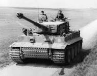
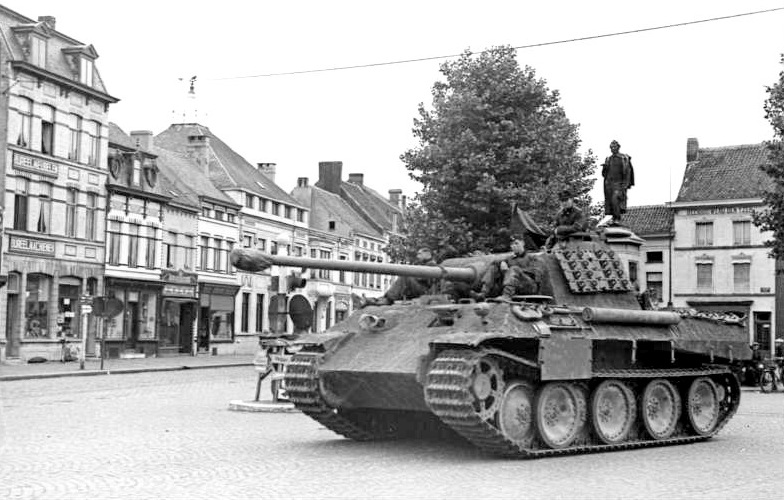

Geschichte des Tiger Panzers
Der Tiger Panzer war ein schwerer Panzer aus dem zweiten Weltkrieg. Er wurde von Deutschland entwickelt und war für seine starke Panzerung und überwältigende Feuerkraft bekannt. Es gab zwei Modelle des Tigers: H1 und Tiger E.
Tiger Panzer Bild

Panther Panzer Bild

Geschichte des Panthers
Technische Infos (Panther)
- Gewicht: ca. 45 Tonnen
- Bewaffnung: 75 mm KwK42 L/70 Kanone
- Einsatzzeit: 1943 bis 1945
- Besatzung: 5 Mann (Fahrer, Funker/MG-Schütze, Ladeschütze, Richtschütze, Kommandant)